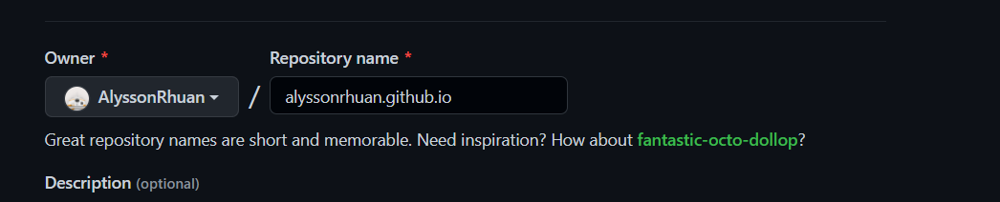
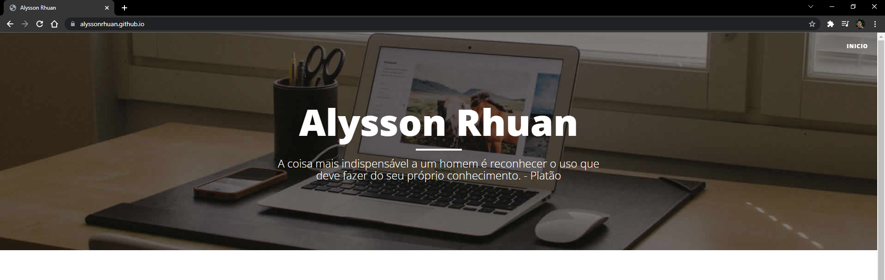

Diversas vezes fiquei buscando tutoriais na sobre coisas que já havia feito ou pesquisado, mas por mexer uma vez ou outra acabava esquecedo. Por isso então decidi centralizar meu conhecimento obtido em um blog para que eu possa sempre cosultar.
Pensando nisso decidi iniciar meu blog, e pesquisando diversas plataformas e ferramentas acabei de decidindo pelo GitHub pages, pois já que todos projetos desenvovlidos ficam centralizados no meu GitHub, porque não meu blog tambem estar lá.

O que é o GitHub Pages?
Nada mais é que um serviço de hospedagem para sites estáticos, ou seja, um site simples com HTML, CSS e JavaScript diretamente no repositório.
E como criar?
Primeiramente vá para o GitHub e crie um novo repositório público chamado username.GitHub.io, onde username é o seu nome de usuário no GitHub. Por exemplo meu usuário no GitHub é AlyssonRhuan, então criei um repositório chamado alyssonrhuan.github.io
 Exemplo de criação de repositório no GitHub.Lembre-se de que se a primeira parte do repositório não corresponder exatamente ao seu nome de usuário, não funcionará, então certifique-se de que está correto.
Próximos passos
Após criado o respositório, você pode já clonar em sua máquina ou pelo próprio GitHub criar um arquivo index.html para termos nossa página inicial.
Com a estrutura pronta, e atualizado no GitHub, basta acessar username.github.io no navegador para já ver o site funcionando.
 Print da página aberta no navegador.Prontinho, já temos a estrutura mínima para o blog, agora basta irmos aumentando a estrutura do HTML para customizar o blog.